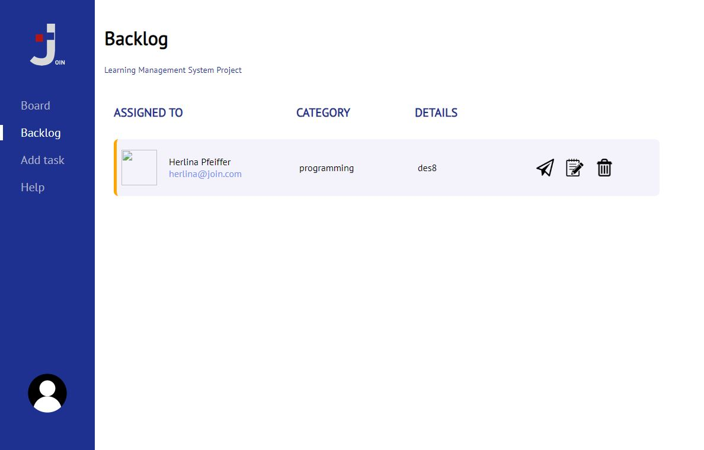
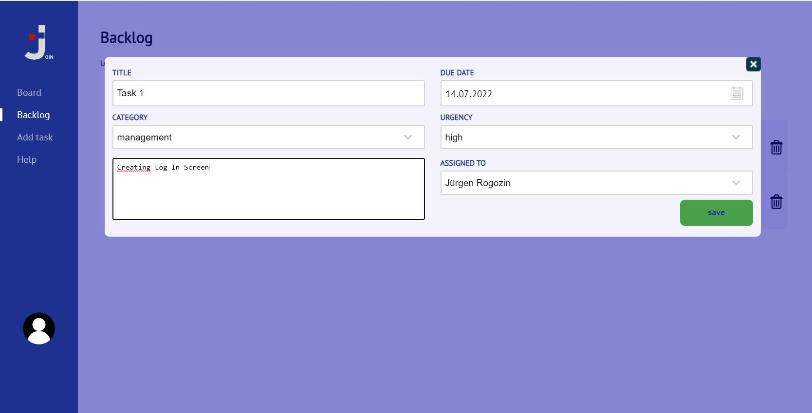

HELP
How to use the Join app
- Create a task on the "Add Task" page

- On following "Backlog" page you can find the created tasks.
On the right side the task can be sent to the board, edited or deleted

- Click on middle icon of the picture 2. Save the changes on the below open task dialog.

- Click on the right/third icon of the picture 2
 to send the task to the "board"
to send the task to the "board"
- The tasks sent to the "Board" page, are displayed first in the "To Do" column and can be
moved
with drag & drop depending on the processing status.